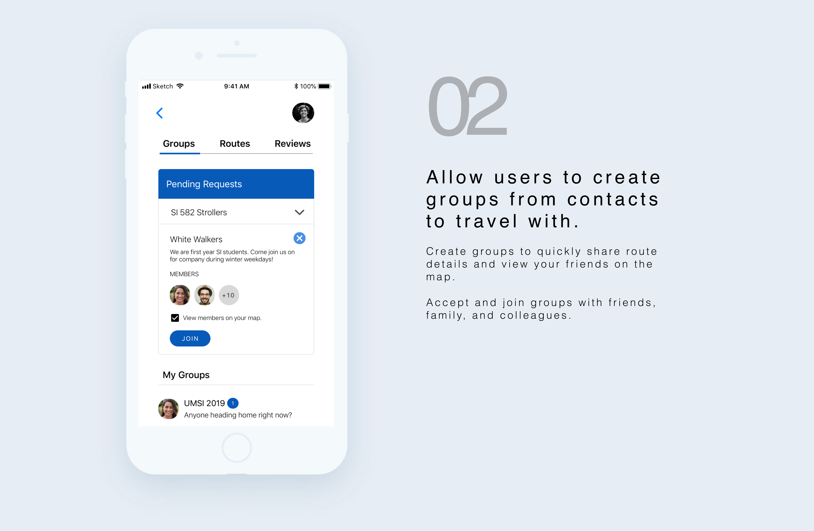
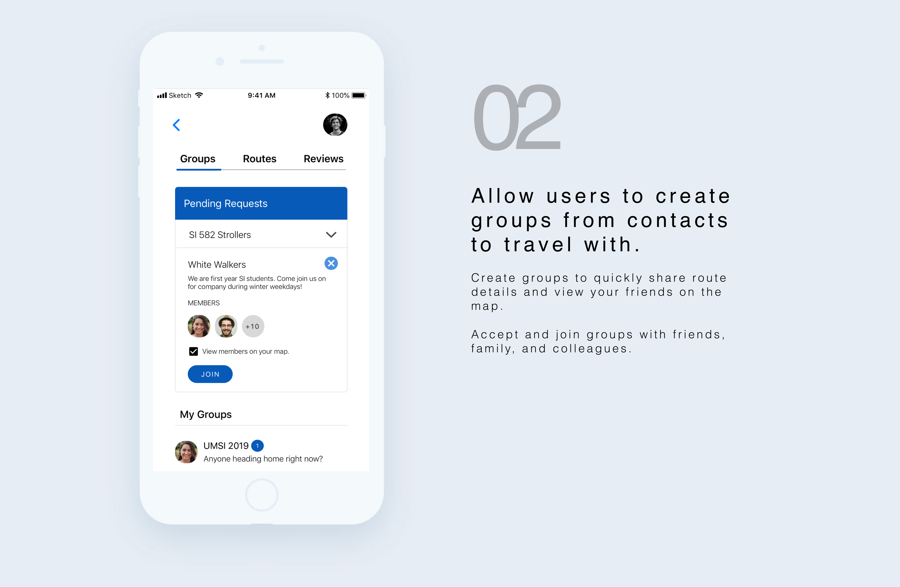

Project Type
Individual Interaction Design Project
Role
UX Designer and Researcher
Duration
September to December 2017
Skills
Secondary Analysis, Interviews, Instagram polls, Storyboarding, QOC Analysis, Wireframing, Paper and Digital Prototyping.
Challenge
How can we improve user's preception of safety when walking alone?
It was my first week in Ann Arbor and navigating the town hadn't been that easy. Seeing multiple crime alert emails within a span of few weeks, I decided to explore user perception on safety in the local Ann Arbor Community.
With the project timeline in mind and with a focus on residents without cars, I chose U of M students as my primary audience.
Why?
"Fewer than four in 10 adults in the U.S. (37%) say there is an area within a mile of where they live where they would be afraid to walk alone at night, similar to Americans' attitudes over the last decade and a half." - Gallup U.S. Daily survey Oct. 12-15, 2014
Solution
How can we approach this challenge?
A mobile app concept to help communicate safety information in a non overwhelming way hence allowing the users to choose their SafeRoute. Here are a few of the key features explored through the first iteration of a low fidelity digital prototype.
 



Methodology
Design process, methods, and highlights in creating SafeRoute

User Research
Understanding mental models of the target audience
After 8 interviews, two observation sessions, a feature based comparative analysis, an instagram poll and multiple peer critique sesssions I was able to narrow down the problem scope, validate intial findings, and understand the target audience better.
"I usually call my mom or a friend when walking home alone." - P1
"I feel very scared going through blocks with crowds of drunk people." - P3

Instagram Poll - 36 Respondents in less than 24 hours.
Observing the same street - Day & Night.
Design Principles
Translating insights to ideas
Analysis of qualitative data and secondary analysis indicated follwoing key aspects of the desired solution:
companions while traveling
easy access to friends and family.
real-time updates on routes
ability to share information quickly.
control over company and route
enable comparisions but let the users make the final decision.
build trust in the solution
new users should also be able to trust the solution easily.
Ideation
Storyboarding ideas involving community, technology, and futuristic concepts.

With the target audience - U of M students in mind, I asked users for feedback on solutions. Some of the common themes I heard was - cheap solution, quick installation, easy login, and a U of M branding.
I began to explore a mobile app concept with the insights and feedback collected.
Refinements
How can I validate my design decisions?
The process of refinement started rigorously with a Question Option Criteria Analysis followed by sketching out possible approaches.Some of the key interactions refined were:

Wireframing
Iteratively incorporating user insights in my designs
I created wireframes on paper and then on balsamiq to get feedback from potential users. What did I learn?
A first time login with U of M ids gave users the feeling that this was a realiable app.
Users did not want to login before navigating.
A key feature that I had discovered was the need for safety rating for routes.
Next, I explored the use of color, vocabulary, and possible microinteractions to display information on all routes in a non overwhelming way.
User feedback - "Why call a route unsafe?", "Red definitely means bad!"
What should be the detailed content on each route? What would be quick to identify and understand?
Apart for required information like time, I also had to introduced new items like - number of hospitals to ensure users were able to verify why a particular route was rated higher than the other.
In order to build trust with new users and provide a companion to solo travelers, I wanted to explore a community driven platform.
This would allow users to rate routes, share routes, share experiences, and curate information for new users.
Prototyping
Iteratively demonstrating the intent screen by screen
To answer questions raised by iteratively ideating, I created task wise paper prototypes and tested it out with users. Here's one such example.
Reflection
key takeaways from my first UX Design project
Over the fall semester I developed a problem statement and solution simultaneously, which merged into a mobile app. This project introduced me to the idea of using a very rapid approach to usability, emphasizing on small-N user testing and paper prototypes to generate user feedback before jumping to high-fidelity designs. I realized the need to incorporate user feedback as early as possible. With more user feedback, I could explore merits of participatory design.
If SafeRoute would be a successful app, it would not only help spread local knowledge within local communities but also help new residents during their initial days in a new place. Since this was my first UX design project and also an individual project, I was very happy to have chosen an accessible target audience. Being able to get feedback at multiple points did increase the number of iterations but also made sure they very valid design suggestions.